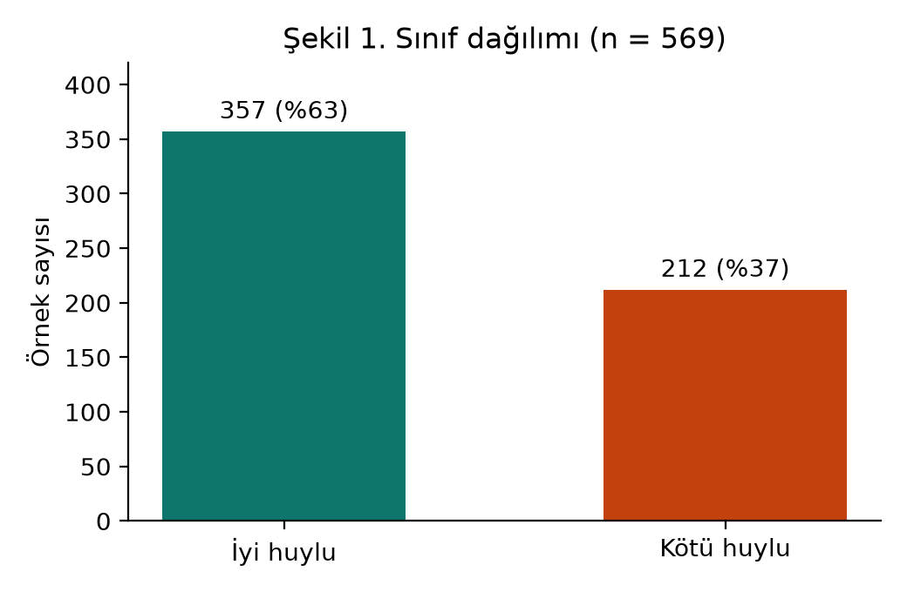
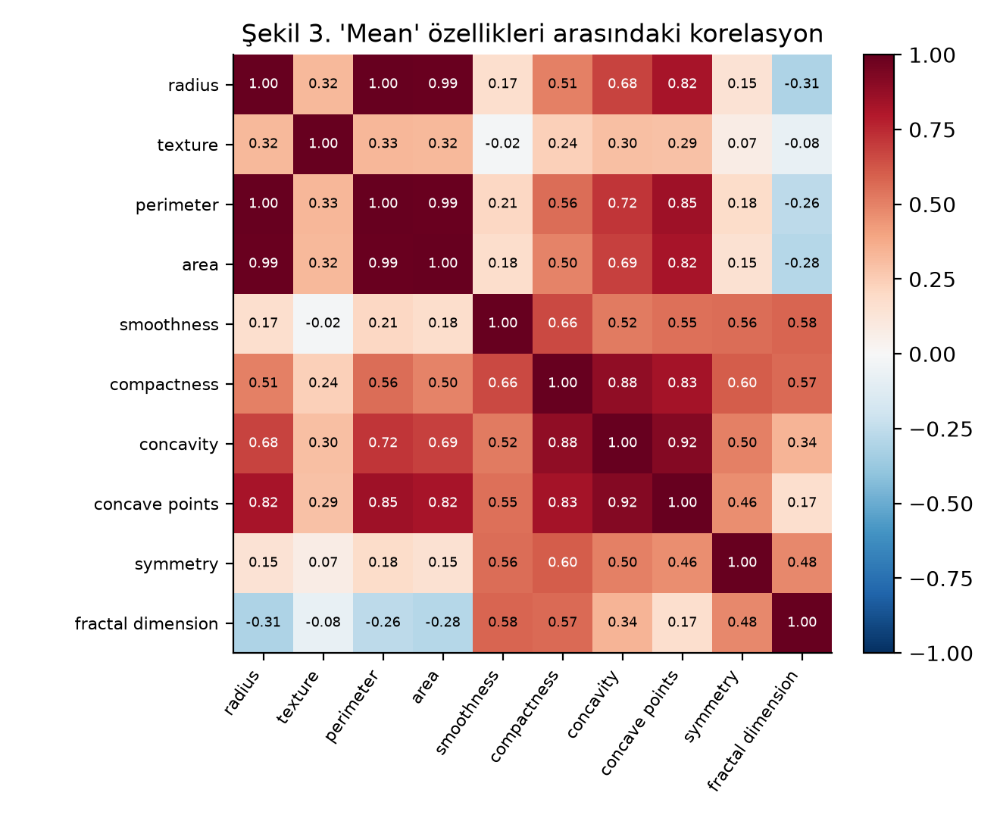
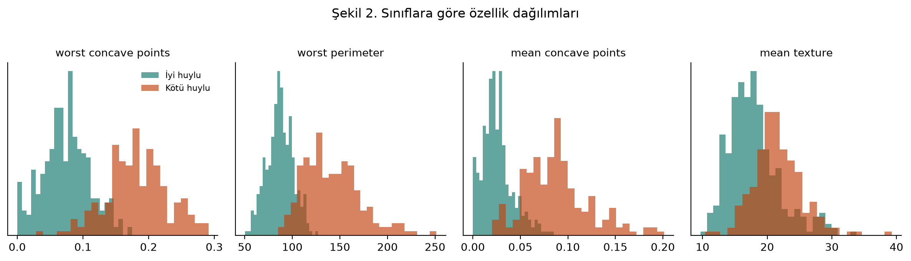

Hücre çekirdeği ölçümlerinden bir meme kitlesinin iyi huylu mu kötü huylu mu olduğunu tahmin eden üç model karşılaştırıldı. Kötü huylu vakayı kaçırmamak için karar eşiği recall öncelikli olarak ayarlandı.
İnce iğne aspirasyonuyla alınan örneğin mikroskop görüntüsünden ölçülen 30 hücre çekirdeği özelliği (yarıçap, doku, çevre, alan, içbükeylik…) girdi; kitlenin kötü huylu olup olmadığı çıktı. Model tanı koymaz, şüpheli örnekleri öne çıkaran bir karar destek aracıdır. Kötü huylu bir vakayı kaçırmak, iyi huylu bir örneği tekrar incelemeye göndermekten çok daha maliyetli olduğu için temel metrik recall’dur.
Breast Cancer Wisconsin (Diagnostic) · UCI Machine Learning Repository · CC BY 4.0 · 569 örnek, 30 sayısal özellik, eksik değer yok.



Üç model aynı katmanlı 5 katlı çapraz doğrulama ve ızgara aramasıyla ayarlandı. Final model test verisine bakılmadan, CV skoruna göre seçildi.
Aşağıdaki noktalar test kümesindeki 114 örneğin modelden aldığı gerçek kötü huylu olasılıkları. Eşiği sola çekersen daha çok kötü huylu vaka yakalanır ama yanlış alarm artar. Halkalı noktalar, o eşikte yanlış sınıflanan örnekler.
Her nokta bir test örneği; yatay konumu, modelin o örneğe verdiği kötü huylu olasılığı. Turuncu alan, modelin “kötü huylu” dediği bölge. Noktanın üzerine gelince örnek numarası ve olasılığı görünür. Eşiği kaydırıp kırmızı satırdaki halkalı noktaların (kaçırılan vakalar) turuncu alana girmesini izleyin.
Üç modelin sıralama başarısı neredeyse aynı (AUC > 0,99). Turuncu nokta, seçili model için yukarıda ayarladığın eşiğin eğri üzerindeki yeri.
Bu çalışma bir eğitim projesidir. Model tıbbi tanı koymaz ve klinik kararlarda kullanılmamalıdır.